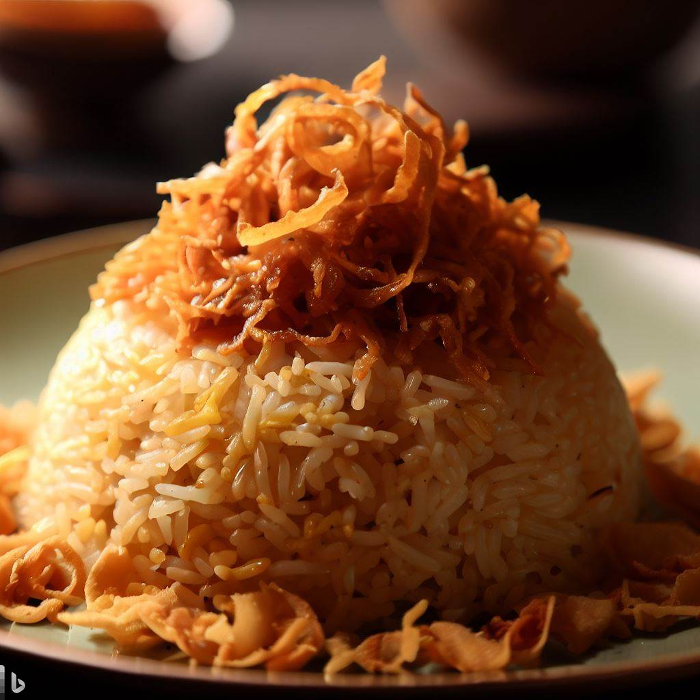
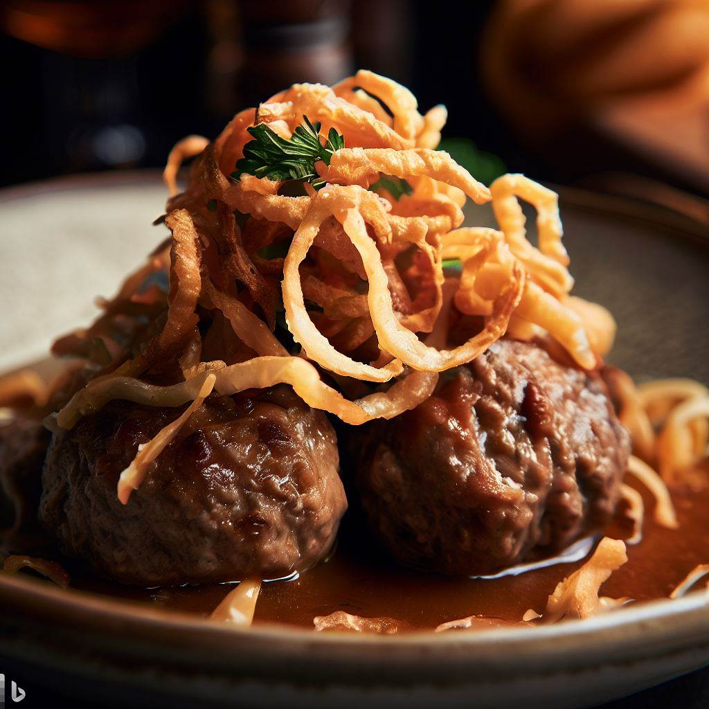
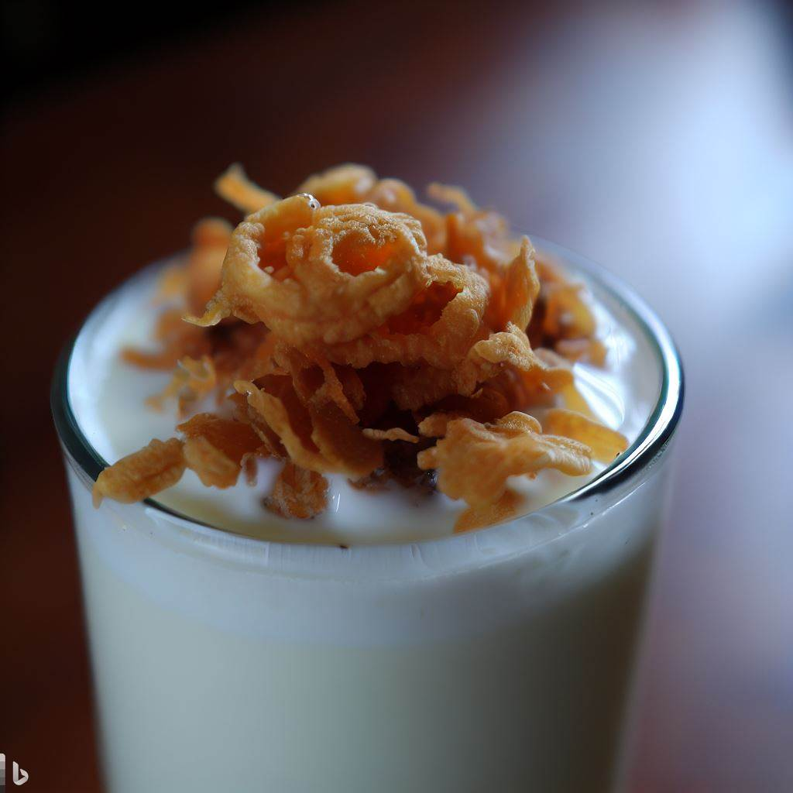

Nasi Goreng dengan Bawang Goreng

Bawang goreng adalah topping yang biasa digunakan untuk nasi goreng.
Bawang goreng terbuat dari
bawang putih atau bawang merah yang digoreng hingga kering dan renyah. Bawang goreng memiliki rasa
yang gurih dan harum yang dapat menambah kenikmatan nasi goreng.
Nasi goreng adalah makanan khas Indonesia yang terbuat dari nasi yang digoreng dengan berbagai macam
bumbu. Nasi goreng dapat divariasikan dengan berbagai macam bahan, seperti telur, ayam, daging,
seafood, dan sayuran. Nasi goreng yang dicampur dengan bawang goreng akan semakin nikmat karena rasa
bawang goreng yang gurih dan harum akan menyatu dengan nasi goreng.
Berikut adalah resep nasi goreng dengan bawang goreng:
Bahan-bahan:
2 cangkir nasi putih
2 siung bawang putih, cincang halus
1 butir telur, kocok lepas
1/2 sdt garam
1/4 sdt merica bubuk
1/4 sdt kaldu bubuk
1/4 cangkir bawang goreng
1/2 cangkir daun bawang, iris halus
Cara membuat:
Panaskan minyak goreng di wajan.
Tumis bawang putih hingga harum.
Masukkan telur dan orak-arik hingga matang.
Masukkan nasi putih, garam, merica bubuk, kaldu bubuk, dan bawang goreng. Aduk rata.
Masak nasi goreng hingga matang dan bumbu meresap.
Sajikan nasi goreng dengan daun bawang.
Bakso dengan Bawang Goreng

Bakso dan bawang goreng adalah dua makanan yang sangat populer di
Indonesia. Keduanya memiliki rasa yang gurih dan lezat, dan sering kali dinikmati bersama-sama.
Bakso terbuat dari daging sapi atau ayam yang digiling halus, kemudian dicampur dengan tepung
tapioka, telur, bawang putih, garam, dan bumbu lainnya. Bakso kemudian direbus atau digoreng sampai
matang.
Bawang goreng terbuat dari bawang merah yang diiris tipis-tipis, kemudian digoreng sampai kering dan
berwarna keemasan. Bawang goreng memiliki rasa yang gurih dan renyah, dan sering kali digunakan
sebagai topping untuk berbagai makanan, seperti bakso, mie, dan nasi goreng.
Berikut adalah resep untuk membuat bakso dan bawang goreng:
Resep Bakso
Bahan-bahan:
500 gram daging sapi giling
1 butir telur
1/2 sendok teh garam
1/4 sendok teh merica bubuk
1/4 sendok teh bawang putih bubuk
1/4 sendok teh ketumbar bubuk
1/4 sendok teh jinten bubuk
1/4 sendok teh pala bubuk
1/4 sendok teh gula pasir
1/4 sendok teh kaldu bubuk sapi
1/2 cangkir tepung tapioka
1/2 cangkir air
Minyak goreng secukupnya
Cara membuat:
Campur semua bahan dalam sebuah wadah. Aduk sampai rata.
Bentuk adonan menjadi bulatan-bulatan kecil.
Rebus bakso dalam air mendidih sampai matang.
Angkat bakso dan tiriskan.
Bakso siap dihidangkan dengan saus sambal, kecap manis, dan bawang goreng.
Susu dengan Bawang Goreng

Susu dan bawang goreng hidangan yang sederhana namun lezat. Bawang
goreng yang renyah dan gurih berpadu dengan susu yang lembut dan creamy, menciptakan perpaduan rasa
yang unik dan menggugah selera. Hidangan ini cocok untuk dinikmati sebagai sarapan, makan siang,
atau makan malam.
Berikut adalah resep untuk membuat susu dan bawang goreng:
Bahan-bahan:
100 gram bawang bombay, iris tipis
1 sdm minyak sayur
500 ml susu cair
1/2 sdt garam
1/4 sdt merica putih
Cara membuat:
Panaskan minyak sayur dalam wajan dengan api sedang.
Masukkan bawang bombay dan tumis hingga harum dan layu.
Tuang susu cair, garam, dan merica putih. Aduk rata dan masak hingga susu mendidih.
Kecilkan api dan masak selama 10 menit, atau hingga susu mengental.
Angkat dari api dan sajikan hangat.